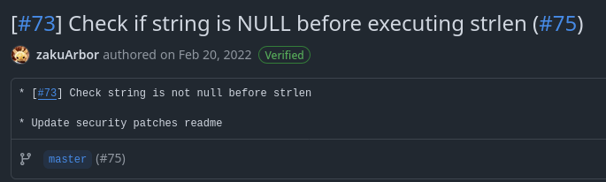
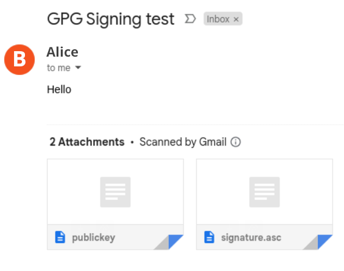
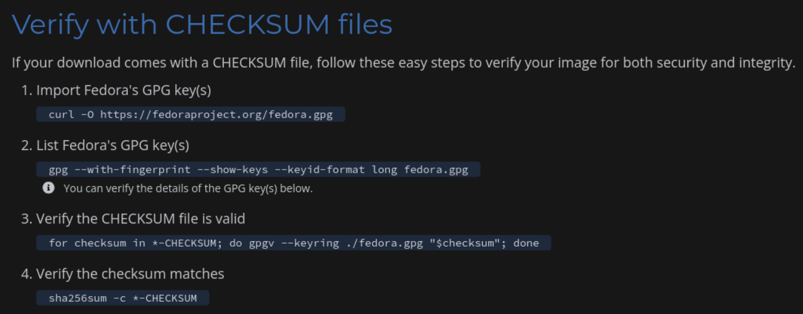
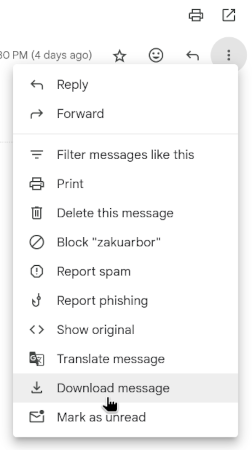
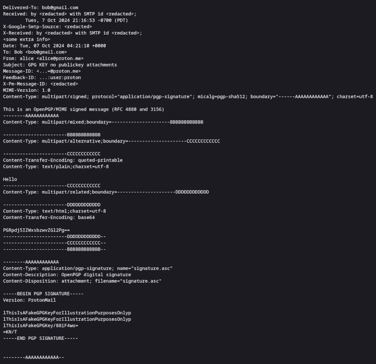
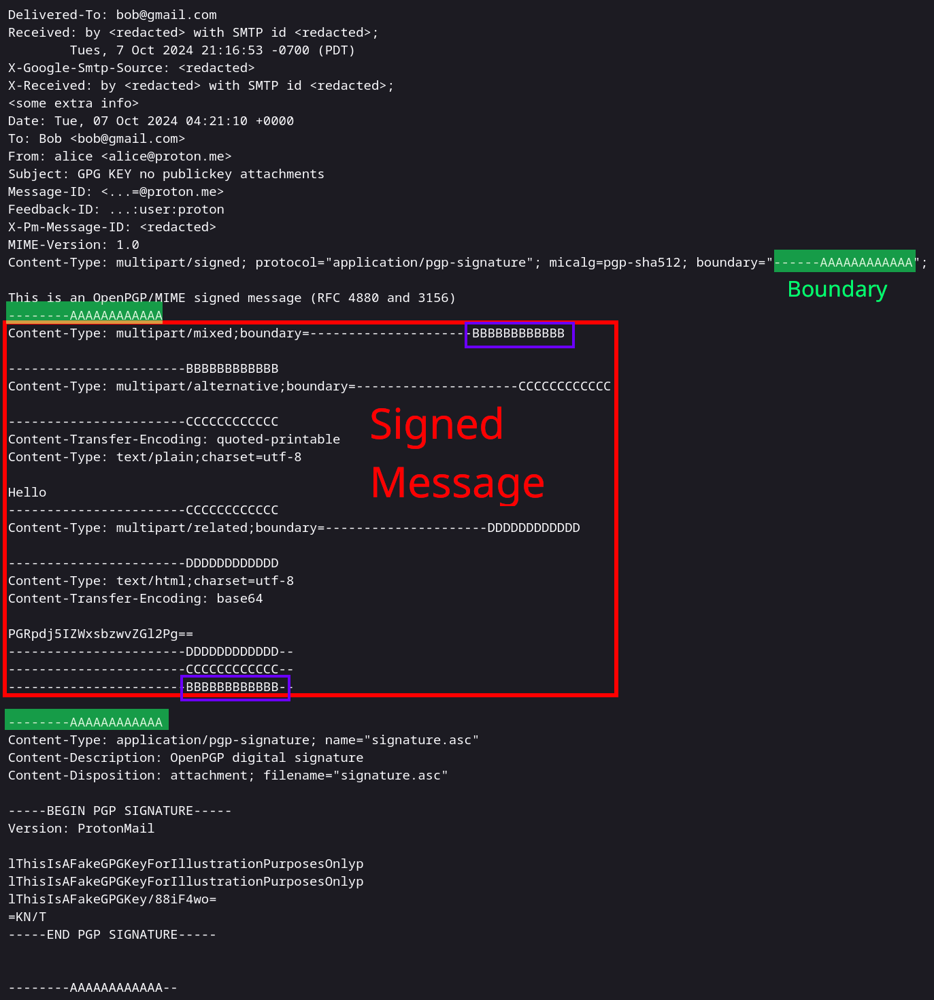

I noticed that the neocities community love using protonmail and some even share their public key to enable full encryption communication. What makes protonmail special is the focus on privacy and security. All emails sent between Proton Mail users are end to end encrypted meaning not even Proton can have access to the messages. However, when communicating outside of Proton ecosystem to non-Proton Mail users like those with Gmail and Outlook, communication between the two are not encrypted end to end by default. This does not mean the encryption utilized by Gmail and Outlook are inadequate. The vast majority of emails are encrypted in transit using TLS encryption, the very same encryption you use to enter your password to your bank or entering your credit card to buy something online for instance.
Aside: If you are curious about protonmail’s encryption scheme: https://proton.me/support/proton-mail-encryption-explained
What is the Purpose of a Digital Signature
Depending on your sense of security, TLS encryption may not be sufficient. There are a few issues with just relying on TLS encryption:
- Loss of Privacy: Companies like Google and Microsoft have access to your data. Depending on their policies, your emails could be used for training purposes, released to government authorities, or be leaked due to a security breach
- Potential For Data to be Compromised: Even if you trust your company to respect your privacy, it does not mean the company has good security practices and could be attacked by a state sponsor. With data not potentially be encrypted at rest and encrypted properly, your data could be leaked to malicious actors
Since communication outside of ProtonMail is not end-to-end encryption, if one wants to maintain the security level of their communication, they would need to require both parties to send emails encrypted with each other’s public key. Therefore, it is not uncommon to see people on the internet share their public key for others to communicate with them.
Personally, I am fine with using Gmail and Outlook for all my email communication but nonetheless, I thought it would be interesting to see how one would manually verify the signature of an email. One other use case of public key cryptography is signing. Encryption refers to obfuscating the original message to ensure confidentiality (to the best of one’s knowledge). Digital signing does not ensure confidentiality but authenticity. In other words, digital signing is a process to verify that the email has not been tampered with and comes from the person whom they claim to be. With man in the middle attacks, it is possible for an attacker to intercept and modify the original message. Here are some purposes (and potential uses) of digital signatures:
- Authenticity: A verification that you are indeed talking to the person whom you think you are talking to
- this assumes that the private key of the other party is kept secret and secured and you are given the public key somehow in a secured and trusted way
- Integrity: The ability to detect if the message has been tampered with (similar to a tamper tape/seal on very sensitive envelopes or products)
- Attestation I really should be careful what I mean by “attestation”. I am referring to the sender attesting that they indeed are the one who is communicating with them for legal purposes. Similar to how we sign documents to attest that we agreed to the accuracy of the documents and agreement to the terms outlined in the contract, digital signatures can be also used for similar purposes. A better word for this process is notarization.
While authenticity and “attestation” (from my definition) sound similar, but there is a key difference between the two. Authenticity is for the receiver to verify they are indeed talking to the person they believe to be in contact with. “Attestation” is a way to legally bind the user to a contract. Therefore, if a digital signature is ever used for the purpose of entering a contract, one should ensure they use separate keys for signing and encryption. When you communicate with others using public key encryption, you are obviously not signing every message as if it was a legal contract. This is something I probably need to remember myself as I delve more into security.
One interesting aspect about digital signatures is protecting software from supply chain attacks. If you ever download a software from a big open source project like Fedora, they would often provide you either a hash or a signature. A hash can be used to verify that the file has not been tampered. However, this does not provide authenticity. Authenticity can only be obtained through the usage of digital signature. If an attacker manages to infilterate a server, they could potentially replace the file and its associated hash with their own malicious file. The client will not be able to protect themselves from this supply chain attack as both the file and the hash posted on the project’s website has been compromised. With digital signature, one can verify the authenticity of the file and have assurance the file has not been tampered with. However, this does require one to already have the public key beforehand as the attacker could already have compromised server that shares the project’s public key.

Commits can be signed ON Git. Github has a feature to mark the commit or tag as verified if the commit was both signed and verified by Github.
I mentioned that digital signatures can provide authenticity, but this is not entirely true. This is true if you have obtained the public key from a trusted source such as from the entity you are communicating with. This is where digital certificates can help.
Anyhow, that was enough rambling, time to go into the details of how to verify email signatures.
How to Verify a Digital Signature
Digital signatures work by having the sender (Alice) sign the message with their private key. With this, the receiver (Bob) can use the sender’s (Alice’s) public key to verify the message. From my understanding, the signature is often appendded to the email message so that the receiver can easily obtained the signature when they receive the email. This could differ when using digital signatures for different purposes such as downloading a software from the publisher’s site. Wikipedia has a good diagram to visualize this process:

A diagram illustrating how the process of signing and verifying a digital signature works. Extracted from Wikipedia
I will not go into how to sign an email as my focus is on how to verify an email signature. More specifically, I will be using ProtonMail to automatically sign my email and send the email to my Gmail account.
Step 1: Obtain the Public Key
There are a few methods to obtain a public key such as from the organization’s website or attached to the website. This is likely the most vulnerable step in the entire process as an attacker could upload their own public key to a vulnerable website or masquerade as the person you expect to be communicating with such as having an email that resembles closely with a trusted identity or is spoofed to appear legitimate as seen with Outlook in 2021. Protonmail offers an option to send a public key to those outside of Protonmail ecosystem automatically. While this method isn’t flawed (I ain’t a cybersecurity expert) per se, this does make me think twice about the validity of the public key that has been sent to me as using a compromised key could make this entire verification process go wrong. However, to initiate communication that is encrypted end to end, this is a necessary step. While I do not have a clear picture on certificates, certificates probably could alleviate this issue by having a trusted third party called the certificate authority to verify the identity of the sender.


Left: Alice sending an email to Bob with her publickey and signature. Right: Instructions to verify Fedora ISO
Step 2: Import (Alice’s/Sender’s) Public Key
Once Alice’s (i.e. the sender) public key has been obtained, the key needs to be imported to the public keyring. I do not understand why the keys always have to be imported
rather than just being specified to be honest. Perhaps it’s because I am using the public key as an armoured ASCII asc rather than the GNU Privacy Guard gpg public keyring file. Though
I am not going to bother verifying this.
To import a public key: gpg --import <key.gpg>
$ gpg --import publickey-alice@proton.me.asc
gpg: key <redacted>: public key "alice@proton.me <alice@proton.me>" imported
gpg: Total number processed: 1
gpg: imported: 1
We can verify the import with: gpg --list-public-keys <uid>
$ gpg --list-public-keys alice@proton.me
pub ed25519 2024-01-10 [SC]
<redacted fingerprints>
uid [ unknown] alice@proton.me <alice@proton.me>
sub <redacted> 2024-01-10 [E]
Step 3: Download the Email Message
This step does vary depending on your email client but on Gmail, one can simply download the email by clicking on the kebab menu (the three dots or ellipses) found on the right side of the email as shown below:

This will download the email in the electronic mail format .eml which is not the signed email. .eml files have a lot of extra information that is packaged over the
signed email. We will need to extract the content that has been signed to verify the message.
Step 3: Extract the Content Containing the Signed Email
The content of the email that needs to be extracted is the data that has been signed by Alice’s public key to create the signature. The file will look something like the following:

An edited email file that does not contain attachments aside from the signature
Step 4: Extract Signed Message
As mentioned in the previous step, we need to remove all the extra data in the email file that isn’t part of the signed message. You should make a backup of the email file because this is easy to mess up if you do not know what you are doing like the author had:
$ cp 'GPG KEY no publickey attachments.eml' 'GPG KEY no publickey attachments.eml.bak'
$ ls 'GPG KEY no publickey attachments.eml'*
'GPG KEY no publickey attachments.eml' 'GPG KEY no publickey attachments.eml.bak
The content of the message starts after you see the following header (the hash will differ):
This is an OpenPGP/MIME signed message (RFC 4880 and 3156)
--------AAAAAAAAAAAA
where --------AAAAAAAAAAAA is our boundary as clear denoted earlier in the file.
This means the very first line of the signed file is:
Content-Type: multipart/mixed;boundary=---------------------BBBBBBBBBBBB
The contents of the signed message is enclosed within the boundary which is (does not include the boundary) as shown below (remove trailing newlines):

The contents of the signed message
One thing I notice is that the hash on the first line of the signed message is also the last line in the signed message. For instance, in our example that would be:
BBBBBBBBBBBB. Therefore our file should also end with this hash.
For instance, if our message looked along the lines of:
MIME-Version: 1.0
Content-Type: multipart/signed; protocol="application/pgp-signature"; micalg=pgp-sha512; boundary="------3141887d7abcdefgbe09e18825fd164103abcdefgf8c40b59382649cd69b31415"; charset=utf-8
This is an OpenPGP/MIME signed message (RFC 4880 and 3156)
--------3141887d7abcdefgbe09e18825fd164103abcdefgf8c40b59382649cd69b31415
Content-Type: multipart/mixed;boundary=---------------------ff35159c3ebf11234dd954191b3141592
...
-----------------------ff35159c3ebf11234dd954191b3141592
Content-Type: application/pgp-keys; filename="publickey - alice@proton.me - <redacted>.asc"; name="publickey-alice@proton.me.asc"
Content-Transfer-Encoding: base64
Content-Disposition: attachment; filename="publickey-alice@proton.me.asc"; name="publickey - alice@proton.me - <redacted>.asc"
ABCDEF0x4ZjZkeGxSL0xUABCDEFmltotlUR0ABCDEFWaABCDEFE9PQP9ABCDEFAABCDEFtLUVORCBABCED
ABCDEFEABCDEFFWSBCTE9DSy0tLABCDE==
-----------------------ff35159c3ebf11234dd954191b3141592--
--------3141887d7abcdefgbe09e18825fd164103abcdefgf8c40b59382649cd69b31415
Then the signed message would be:
Content-Type: multipart/mixed;boundary=---------------------ff35159c3ebf11234dd954191b3141592
...
-----------------------ff35159c3ebf11234dd954191b3141592
...
-----------------------ff35159c3ebf11234dd954191b3141592
Content-Type: application/pgp-keys; filename="publickey - alice@proton.me - <redacted>.asc"; name="publickey-alice@proton.me.asc"
Content-Transfer-Encoding: base64
Content-Disposition: attachment; filename="publickey-alice@proton.me.asc"; name="publickey - alice@proton.me - <redacted>.asc"
ABCDEF0x4ZjZkeGxSL0xUABCDEFmltotlUR0ABCDEFWaABCDEFE9PQP9ABCDEFAABCDEFtLUVORCBABCED
ABCDEFEABCDEFFWSBCTE9DSy0tLABCDE==
-----------------------ff35159c3ebf11234dd954191b3141592--
Step 5: Verify the Email Signature
Verify the signature: gpg --verify signature.asc message.txt
$ gpg --verify signature.asc message.txt
gpg: Signature made Mon 07 Oct 2024 11:29:48 PM EDT
gpg: using EDDSA key <redacted>
gpg: Good signature from "alice@proton.me <alice@proton.me>" [unknown]
gpg: WARNING: This key is not certified with a trusted signature!
gpg: There is no indication that the signature belongs to the owner.
Primary key fingerprint: <redacted>
While the signature has been verified: Good signature, we do see a warning about the key not being certified.
(Optional) Step 6: Validate Imported Public Key
Upon reading gnupg manual, there are instructions to verify the imported public key by checking if the key’s fingerprint matches the key you are expecting from Alice (the sender). This does involve Alice letting Bob know about it’s key’s fingerprint somehow whether that be in email, text, voice call or in some paper delivered to Bob. Let’s pretend the fingerprint of Alice’s public key was transmitted to you through a trusted source is:
768B 218A CCD7 AA34 9830 52D8 9BD4 1A08 9D98 BC02
We can verify whether the public key really came from Alice by verifying the public key’s fingerpint and see if it matches:
$ gpg --edit-key alice@proton.me
...
gpg> fpr
pub ed25519/[redacted] 2024-01-10 alice@proton.me <alice@proton.me>
Primary key fingerprint: 768B 218A CCD7 AA34 9830 52D8 9BD4 1A08 9D98 BC02
To validate Alice’s public key (proceed with caution), we must sign the key with our own private key:
gpg> sign
pub ed25519/[redacted]
created: 2024-01-10 expires: never usage: SC
trust: unknown validity: unknown
Primary key fingerprint: 768B 218A CCD7 AA34 9830 52D8 9BD4 1A08 9D98 BC02
alice@proton.me <alice@proton.me>
Are you sure that you want to sign this key with your
key "Bob <bob@gmail.com>" ([redacted])
Really sign? (y/N) yes
gpg> quit
Save changes? (y/N) y
However, this is not suffice to change the validity. On serverfault, Baker does a good job explaining that TRUST != VALIDITY.
I am guessing due to the differences in the default settings on gpg, I need to set my trust level to 5 ultimate to remove this warning:
gpg> trust
pub ed25519/[redacted]
created: 2024-01-10 expires: never usage: SC
trust: unknown validity: unknown
sub cv25519/[redacted]
created: 2024-01-10 expires: never usage: E
[ unknown] (1). alice@proton.me <alice@proton.me>
Please decide how far you trust this user to correctly verify other users' keys
(by looking at passports, checking fingerprints from different sources, etc.)
1 = I don't know or won't say
2 = I do NOT trust
3 = I trust marginally
4 = I trust fully
5 = I trust ultimately
m = back to the main menu
Your decision? 5
...
Please note that the shown key validity is not necessarily correct
unless you restart the program.
Now if we take a look at the verification, we no longer see the warnings.
$ gpg --verify signature.asc message.txt
gpg: Signature made Mon 07 Oct 2024 11:29:48 PM EDT
gpg: using EDDSA key <redacted>
gpg: Good signature from "alice@proton.me <alice@proton.me>" [ultimate]
Conclusion
In practice, no one verifies the digital signatures of emails manually. Any sane individual will utilize any email client that would automate the verification process for them. As most individuals are not aware of digital signing and email encryption, I’ll probably not set up my email client for work, school, and personal email to automatically verify, sign, and encrypt emails unless I am required to. This does mean I am exposing myself to the spying eyes of my email providers and be suspectible to man in the middle attacks and have my personal information potentially leaked.
To summarize the steps:
- Import the keys:
gpg --import <key.gpg> - Extract the signed message (this includes any attachments that is not the signature itself)
- Verify the email:
gpg --verify signature.asc message.txt